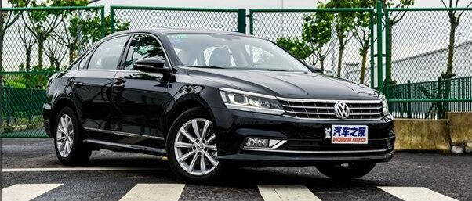
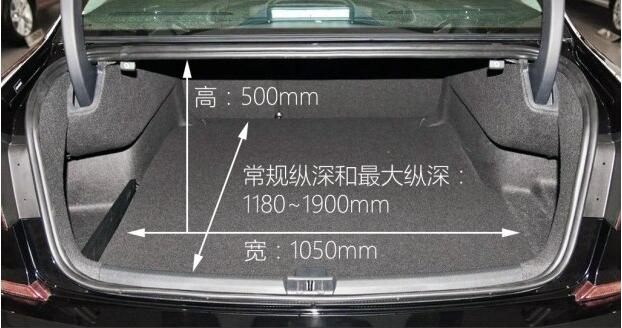
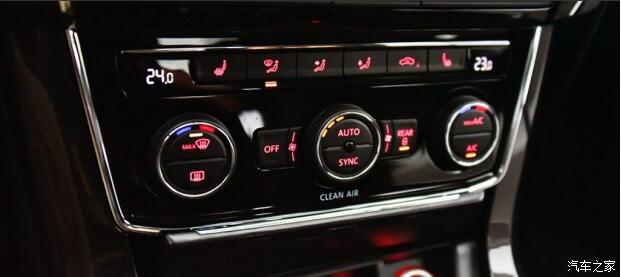

帕萨特长测车已经在编辑部住了六个月，如今也到了该说再见的时候了。在这段时间里帕萨特勤勤恳恳跑了许多地方，长三角地区的南京、杭州、安吉等地都跑过了，无论是驾驶品质还是可靠性都不错。
外观造型：★★★
帕萨特的前脸造型一直为人吐槽，大众家族化设计让不少人至今都分不清帕萨特、迈腾乃至朗逸和桑塔纳，不过移到侧面看的话就好区分多了。该车造型设计只能说是中规中矩，与惊艳、时尚几乎沾不上边。修长的车身在视觉上拉长了车身尺寸，再加上中庸的造型设计，无论将它放在什么场合似乎都很合适，用车友在口碑中的总结就是“低调奢华有内涵”。
配置：★★★★★
长测车选择的是帕萨特车系中销量最好的330TSI御尊版，从我们的口碑数据来看，买这该配置的用户最多，占比约为40%，位列二三名的是配置低一等级的330TSI尊荣版（1.8T低配）和280TSI尊荣版（1.4T车型最高配）。
空间：★★★★★
帕萨特乘坐空间较为宽敞，后排纵向空间在同级别中算得上是中游以上水平，横向宽度坐上3个成年人也没有大问题。当然相比更新更先进的迈腾而言，帕萨特依然有不少改进的地方，比如硬邦邦的头枕就急需改进，靠着真的有些不舒服。后备厢储物能力也不弱，490升的常规容积虽然在数据上没有什么优势，但好在内部空间规整，加之后排椅背还能放倒，编辑我偶尔开车回家时就会把日常用来通勤的自行车往里面塞，虽然没有SUV那么便利，但空间是绝对够用的。需要吐槽的是后排放倒拉手放在了后备厢内，如果座舱内再配备一套放倒拉手的话用起来更方便。